Você está pronto para liberar a Deusa da Morte na Terra do Amanhecer?
Este guia completo da Obsidia para Mobile Legends: Bang Bang mergulha em
sua sombria história, habilidades únicas e poderosas mecânicas de jogo. Seja você um
iniciante ou um jogador experiente, abaixo encontrará estratégias e builds que vão ajudá-lo
a dominar o campo de batalha com Obsidia.
Neste guia, exploraremos a história de Obsidia, suas habilidades, seu papel como
Atiradora da Rota do Ouro e as melhores maneiras de maximizar seu
potencial de dano. Fique até o final você pode descobrir táticas ocultas que
podem mudar para sempre a forma como você joga com ela.
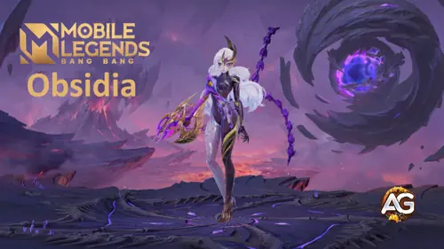
Guia da Obsidia - Mobile Legends: Bang Bang, um jogo desenvolvido pela Moonton.
Quem é Obsidia?
Obsidia é uma temível Atiradora em Mobile Legends: Bang Bang, conhecida por
sua sombria história como a Deusa da Morte. Antiga governante do Abismo, ela retornou
de seus fragmentos selados para caçar os Filhos da Decadência e recuperar seu poder perdido.
Classe: Atiradora
Posição: Rota do Ouro
Atributo Principal: Ataque Físico
Com armas forjadas a partir de seus próprios ossos, Obsidia causa um dano implacável no campo de batalha.
Seu estilo de jogo se concentra em punir inimigos com ataques constantes, tornando-a uma finalizadora letal
no fim da partida.
Neste guia, abordaremos sua história, atributos e estratégias para ajudá-lo a dominar a Obsidia
e controlar a Rota do Ouro com precisão e poder.
Como Jogar com Obsidia em Mobile Legends
Domine a jornada de Obsidia, de uma frágil Atiradora da Rota do Ouro até se tornar uma temível Deusa da Morte. Aprenda, passo a passo, as melhores evoluções de habilidades e estratégias de luta em equipe.
Estratégia de Início de Jogo
No início da partida, Obsidia é frágil, mas cheia de potencial. Concentre-se na Rota do Ouro,
onde Atiradoras como ela podem acumular equipamentos rapidamente. Use Agulha Óssea Abissal para incomodar os inimigos
e construa Fragmentos Ósseos com segurança através da sua passiva. Evite lutas desnecessárias seu objetivo é
farmar com eficiência, especialmente nos Minions de Cerco, que concedem ouro extra.
Mantenha-se próxima da sua torre se estiver sob pressão e lembre-se: paciência agora significa poder mais tarde.
Estratégia de Meio de Jogo
No meio da partida, você já deve ter seus primeiros itens principais, tornando Obsidia mais ameaçadora.
Este é o momento de rotacionar com sua equipe. Use Caçada de Ossos para iniciar lutas ou capturar
heróis inimigos-chave, especialmente os mais frágeis. Com Fusão Sombria Fantasmagórica, você pode perseguir ou se reposicionar
para escapar do perigo. Lembre-se, seu dano está crescendo rápido apoie sua equipe nas pequenas batalhas, mas não se esqueça
de continuar farmando entre elas. O segredo do sucesso aqui é equilíbrio: farmar com inteligência, lutar com inteligência.
Estratégia de Fim de Jogo
No fim da partida, Obsidia se transforma em um monstro de lutas em equipe. Com a build completa, seus
Fragmentos Ósseos destroem até mesmo os oponentes mais resistentes. Agora, posicionamento é tudo permaneça
na retaguarda, protegida por seus aliados, e deixe a Agulha Óssea Abissal e os ataques básicos fortalecidos causarem devastação.
Caçada de Ossos se torna sua carta na manga: use-a para atordoar o carregador inimigo ou atrapalhar a coordenação da equipe adversária.
Neste estágio, você é a condição de vitória do seu time, então jogue com cuidado, mas sem medo. Um ultimate bem-timed pode decidir toda a partida.
Recomendação de Função: Rota do Ouro
Atiradoras como Obsidia brilham na Rota do Ouro porque conseguem farmar mais rápido e desbloquear
seu poder total mais cedo. Apesar de fraca no início, com os itens certos, Obsidia se torna uma fonte implacável de dano constante,
capaz de carregar sua equipe rumo à vitória.
Prioridade de Evolução das Habilidades da Obsidia - Mobile Legends: Bang Bang
Prioridade simples e prática das habilidades da Obsidia: descubra quais evoluir primeiro e por quê, explicado passo a passo para jogadores que precisam de orientação clara.
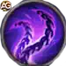
Obsidia - Retorno ao Osso: Passiva
Como funciona (simples): Cada vez que Obsidia acerta inimigos com ataques ou habilidades, ela
acumula Energia Óssea. Quando essa energia é suficiente, ela se transforma em Fragmentos Ósseos.
Ao usar ataques básicos, esses Fragmentos atingem o alvo como dano físico extra.
Pense neles como pequenos mísseis que explodem nos seus próximos ataques, tornando seus golpes normais muito mais fortes com o tempo.
Por que isso importa: Essa passiva é o núcleo da identidade de dano da Obsidia
ela amplifica seus ataques básicos e escala com seu Ataque Físico. Como é uma habilidade passiva,
você não a evolui (não tem upgrade). Apenas saiba que ela funciona em segundo plano e fortalece tudo o que você faz.
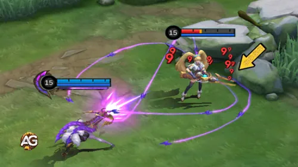
Retorno ao Osso (Passiva) — fortalece os ataques básicos da Obsidia.
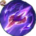
Obsidia - Agulha Óssea Abissal
Como funciona (simples): Obsidia dispara uma agulha óssea que atinge os inimigos e ativa
Retorno ao Osso no primeiro herói atingido causando grande dano físico e ativando os acúmulos da passiva.
Por ter recarga curta e ativar o passivo, é sua principal ferramenta de dano.
Prioridade de Evolução:Muito Alta – Maximize esta primeiro para aumentar seu dano consistente e fortalecer cada ataque básico.
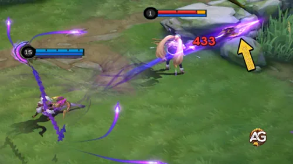
Agulha Óssea Abissal — principal fonte de dano e ativador da passiva.
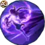
Obsidia - Fusão Sombria Fantasmagórica
Como funciona (simples): Esta habilidade concede um aumento de velocidade de movimento (bem curto),
permitindo que Obsidia persiga ou se reposicione. É ótima para grudar nos inimigos ou escapar, mas não gera tanto dano direto
quanto a Agulha Óssea Abissal.
Prioridade de Evolução:Média – Evolua depois da habilidade de dano e do ultimate. É útil para mobilidade, mas tem prioridade menor em termos de DPS.
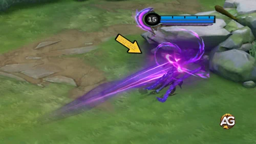
Fusão Sombria Fantasmagórica — explosão curta de mobilidade.
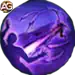
Obsidia - Caçada de Ossos (Ultimate)
Como funciona (simples): Obsidia dispara Ossos da Ira para atordoar e puxar o
herói inimigo, prendendo-o e gerando Fragmentos Ósseos temporários. Isso permite combate corpo a corpo,
impede o inimigo de se reposicionar e fortalece a Fusão Sombria Fantasmagórica enquanto está ativa.
Essa é sua habilidade decisiva, que pode mudar uma luta.
Prioridade de Evolução:Alta – Sempre evolua nos níveis disponíveis (4/8/12). Ela muda batalhas e oferece forte controle e janelas de explosão de dano.
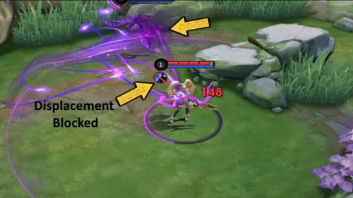
Caçada de Ossos — atordoamento, aprisionamento e grande controle de luta.
Resumo Rápido de Prioridade
Ordem de evolução:
Agulha Óssea Abissal — Muito Alta
Caçada de Ossos (Ultimate) — Alta (pegue nos níveis 4/8/12)
Fusão Sombria Fantasmagórica — Média
(Retorno ao Osso = Passiva — não possui evolução)
Melhores Combos da Obsidia em Mobile Legends
Os combos podem ser simples este guia mostra, passo a passo, os melhores combos de dano da Obsidia, perfeito para iniciantes que querem jogar com clareza e confiança.
Combos na Rota
Passo 1: Agulha Óssea Abissal
Use sua 1ª habilidade para farmar e incomodar com segurança. Pense nisso como “bater e recuar” acerte minions e inimigos aos poucos para acumular sua passiva,
deixando seus ataques básicos muito mais fortes depois.
Passo 2: Fusão Sombria Fantasmagórica
Use esse breve impulso de velocidade para encurtar distância ou escapar. Se estiver inseguro, treine usar a habilidade para reposicionar após um poke, em vez de se jogar direto na luta.
Passo 3: Caçada de Ossos (Ultimate)
Esta é sua virada de jogo: atordoa, puxa e gera fragmentos ósseos. Use quando sua equipe estiver pronta ou quando puder prender um alvo importante não desperdice.
Combos em Lutas de Equipe
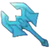
Passo 1: Ataques Básicos + Agulha Óssea Abissal
Comece incomodando com ataques básicos e sua 1ª habilidade para acumular a passiva com segurança. Imagine que você está desgastando uma parede dano lento e constante.
Passo 2: Fusão Sombria Fantasmagórica
Reposicione-se com sua 2ª habilidade caso os inimigos avancem sobre você ou se precisar de um ângulo melhor. É sua rede de segurança use com calma, não no desespero.
Passo 3: Ultimate + Finalização
Quando o inimigo estiver sob foco da sua equipe, use a Caçada de Ossos para prender ou atordoar um alvo-chave, depois finalize com ataques básicos fortalecidos. Um ultimate bem-timado pode vencer lutas.
Heróis Contra os Quais Obsidia é Forte em Mobile Legends
Obsidia brilha contra heróis que dependem de avanços e teletransportes. Seu Ultimate cancela a mobilidade deles, transformando ameaças ágeis em presas fáceis.
Freya
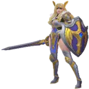
Freya depende de seu salto e explosão de curto alcance. O Ultimate da Obsidia cancela seu pulo, forçando-a a uma luta direta que ela não consegue vencer facilmente.
Hayabusa
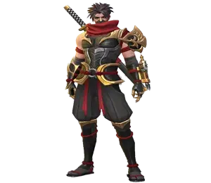
Hayabusa depende de suas sombras para mobilidade e dano. Obsidia o prende com seu Ultimate, impedindo a fuga e punindo-o duramente.
Lancelot
Lancelot sobrevive encadeando avanços para evitar dano. O Ultimate da Obsidia desativa esses movimentos, deixando-o exposto e incapaz de superá-la.
Como Counterar a Obsidia em Mobile Legends
A Obsidia pode ser vulnerável no início do jogo, especialmente contra heróis com forte pressão na rota. Descubra quais heróis exploram suas fraquezas de forma eficaz.
Counters
Counterada por: Obsidia sofre durante a fase inicial da rota, ficando vulnerável contra Atiradores com forte early game, como Bruno e Layla.
Bruno
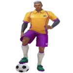
O poke inicial e os críticos do Bruno pressionam a Obsidia antes que ela consiga escalar com itens, dificultando seu farm seguro ou uma resposta eficaz nas trocas.
Os ataques de longo alcance da Layla podem incomodar a Obsidia no início do jogo, forçando-a a jogar de forma defensiva e atrasando sua progressão de itens.
Prós e Contras da Obsidia - Mobile Legends: Bang Bang
✅ Prós
Alto dano contínuo com seus Ataques Básicos e os Fragmentos Ósseos da Passiva.
Ultimate (Caçada de Ossos) desabilita a mobilidade inimiga, sendo muito eficaz contra heróis de dash/blink.
Excelente escalonamento no late game, já que farma equipamentos rapidamente.
Bom controle de rota e poke com Agulha Óssea Abissal.
Boa mobilidade e reposicionamento com Fusão Sombria Fantasmagórica.
❌ Contras
Fraca no early game; pode ser pressionada por Atiradores ou Lutadores agressivos.
Depende muito do farm e dos itens para atingir seu potencial máximo.
Vulnerável a controles de grupo (CC) que podem interromper seus combos.
Exige posicionamento cuidadoso; usar mal o Ultimate ou a 2ª habilidade pode deixá-la exposta.
Dependente dos acúmulos da Passiva; ataques básicos sozinhos são fracos sem eles.
Conclusão
Dominar a Obsidia em Mobile Legends exige paciência, bom tempo de execução e entendimento de seus combos. Foque em acumular a Passiva com pokes seguros, use seu Ultimate com sabedoria para neutralizar alvos importantes e reposicione-se de forma eficaz com a Fusão Sombria Fantasmagórica. Apesar de vulnerável no início do jogo, seu dano e controle no late game podem mudar o rumo das batalhas. Com prática e bom posicionamento, você pode dominar a Rota do Ouro e transformar a Obsidia em um trunfo poderoso para sua equipe.
Sobre a autora
Kilvia Ferreira Domingos é estudante de Engenharia da Computação e joga desde a infância. Ficou conhecida nas lan houses pela sua paixão por CSS (Counter-Strike: Source) e também jogou diversos títulos no PlayStation. No mundo mobile, se destacou no PUBG, Free Fire e Mobile Legends, onde alcançou com frequência o elo mais alto, Glória Mítica. Atualmente, é colunista no Alexandre Games, trazendo análises e dicas práticas para a comunidade gamer.
Ama transmissões de jogos? Siga Kilvia na Twitch para gameplays ao vivo, dicas e sorteios
siga a Kilvia na Twitch!
Você gostou do nosso Guia da Obsidia para MLBB? Há algo que não entendeu ou gostaria de sugerir mudanças? Convidamos você a se juntar à nossa sessão de comentários na página do Alexandre Games Blog. Não hesite em expressar sua opinião, clarificar suas dúvidas e compartilhar sua sugestões. Clique no botão abaixo para começar:


 Guia Phoveus Mobile Legends
Guia Phoveus Mobile Legends
 Guia Suyou Mobile Legends
Guia Suyou Mobile Legends
 Guia Tigreal Mobile Legends
Guia Tigreal Mobile Legends